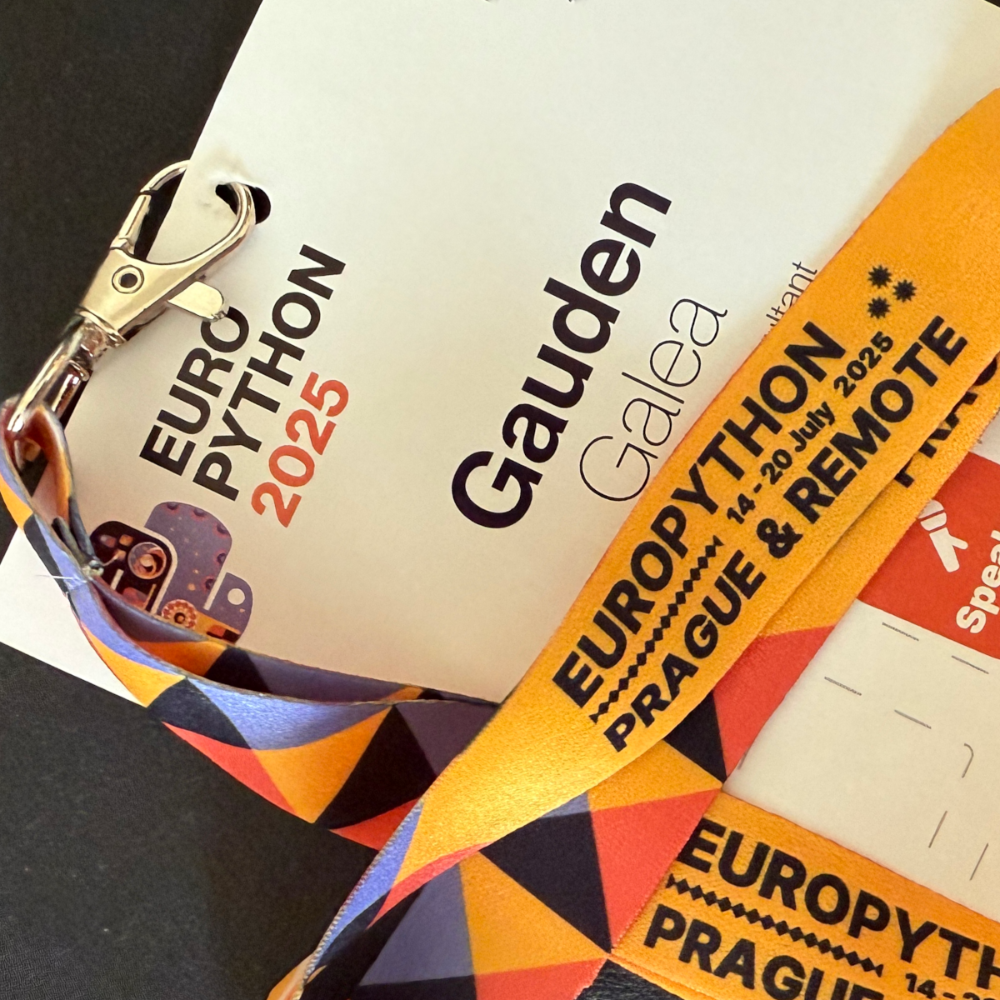

Annex: Responses to my Poll
Context

At the end of my talk at EuroPython 2025, I ran a quick brainstorm among the audience in the room. I generated this report on the spot, but there was no time to discuss it on the day. Several promising ideas did emerge, and I share the report here as Annex to my "Health and Society" post.
Acknowledgment
This poll was conducted using the Pera tool (an internal WHO/Europe app) managed and created by Nebi Bekiri and Miguel Guadarrama (I had a hand in its ideation and the MVP creation as did Nuwan Weerasinghe). Sincere gratitude to Nebi for sanctioning this use.
Poll Question
How might Python and its community bring about a vision of an "open source public health operating system"?
LLM Prompt
You are an expert meeting facilitator. You are collecting inputs from a gathering of Python programmers asked to submit their ideas on possible intersections between Python, its community, and the idea of an open source public health operating system. You are requested to summarise basic concepts, opportunities, reservations or cautions. Be professional in tone and style. Limit the report to three pages maximum. Be ready to use Python in-jokes or allusions where useful but do this sparingly (e.g. the "essential functions of public health" as the "standard library" of the discipline).
AI-Generated Report
Introduction
This document summarises the feedback collected from a group of Python programmers on the potential intersections between Python, its community, and the vision of an open source public health operating system. This summary aims to provide a clear and concise overview of the community's insights and suggestions.
Experience with Open Source and Community Management
- Relevance: Several participants emphasised the importance of leveraging the community's experience with open source and community management. This foundational knowledge is crucial for the development and maintenance of an open source public health operating system.
Education and Training
- University Modules: Incorporating public health and statistics modules into university curricula, specifically using Python and tools like Matplotlib, was a recurring theme. This approach aims to build a strong foundation for future contributors.
- Medical Practitioner Training: Training medical practitioners in Python could enhance their ability to analyse and visualise public health data effectively.
Hackathons and Sprints
- Public Health Data Visualisations: Organising hackathons focused on public health data visualisations can foster innovation and collaboration within the community.
- Conference Sprints: Adding sprints to conferences that utilise open health data for various regions or countries can help explore new insights and applications.
Conferences and Summits
- PyCon Summits: Holding specific summits at major PyCon conferences dedicated to public health topics can increase awareness and engagement.
- Involvement of Organizations: Involving organizations like the Python Software Foundation (PSF) in public health discussions at international forums such as the WHO can bridge gaps between technology and health sectors.
Standardization and Tools
- Common Standards: Developing common standards for accessing public health data is crucial. Providing tools that enable the development of useful applications can significantly impact public health initiatives.
Collaboration Platforms
- Marketplace for Groups: Creating a marketplace for groups focusing on specific tasks, where participants can sign up for sprints, can enhance collaboration and project management.
- Discussion Groups: Establishing discussion groups can facilitate continuous dialogue and idea exchange among community members.
Data Privacy and Security
- Sensitive Data: Handling public health data involves significant privacy and security concerns. Ensuring robust data protection measures is essential to maintain trust and compliance with regulations.
Resource Allocation
- Sustainability: Sustaining an open source public health operating system requires substantial resources, including funding, time, and expertise. Ensuring long-term commitment and support is critical.
Inclusivity and Accessibility
- Broad Participation: Ensuring that the initiative is inclusive and accessible to a diverse range of participants, including those from different regions and backgrounds, is vital for its success.
Conclusion
Key areas of focus include leveraging existing open source and community management experience, enhancing education and training, organizing hackathons and sprints, and establishing common standards and collaboration platforms. Addressing reservations around data privacy, resource allocation, and inclusivity will be essential to the initiative's success.